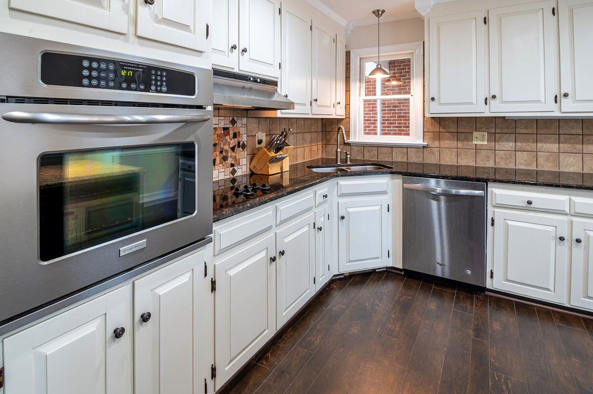

Custom kitchen cabinets Brisbane homeowners order are not an off-the-shelf product. Every cabinet is built to the precise dimensions of your kitchen footprint, which means the outcome depends almost entirely on the quality of your brief, your material choices, and the competence of the cabinet maker you engage. This guide breaks down the decisions you need to make before you sign anything.
Custom Kitchen Cabinets Brisbane: What the Options Actually Mean
Cabinet makers use several terms that sound interchangeable but describe meaningfully different products. Understanding them before you request a quote puts you in a much stronger negotiating position.
Flat-pack vs. rigid-box vs. fully custom
Flat-pack cabinets arrive in panels and are assembled on site. They are the most affordable option and suit standard ceiling heights and straight-run kitchens. Rigid-box cabinets are pre-assembled in a factory to standard widths (typically 300 mm, 450 mm, 600 mm, 900 mm) and installed as complete units. Fully custom cabinetry is built to exact millimetre measurements and can accommodate non-standard angles, raked ceilings, and unusual island configurations. Most Brisbane cabinet makers offer all three tiers, and the choice drives the bulk of the cost difference.
Carcass materials: what holds everything up
The carcass is the structural box that everything else attaches to. Standard materials in Brisbane kitchens are moisture-resistant (MR) particleboard, high-density fibreboard (HDF), and, in premium builds, plywood. MR particleboard is the industry workhorse; it performs well in most kitchens provided it is not exposed to sustained water. Plywood carcasses are more expensive but hold screws better over time and resist moisture more reliably, which matters in kitchens directly adjacent to wet areas.
Door profiles and finishes
Shaker (recessed panel), slab (flat front), and raised-panel doors are the three dominant profiles. Finish options include thermofoil wrap (budget to mid-range, prone to lifting in very high humidity), two-pack polyurethane (smooth, durable, the Brisbane standard for premium builds), and timber veneer (natural grain appearance, requires periodic maintenance). Two-pack finishes suit the Brisbane climate well because they resist the humidity swings that cause thermofoil to delaminate.
Cost Guide: Custom Kitchen Cabinets Brisbane 2026
| Cabinet package | Typical cost range | What is usually included |
|---|---|---|
| Entry-level flat-pack supply and install | $8,000 - $14,000 | Standard carcasses, thermofoil or laminate doors, basic soft-close hardware |
| Mid-range rigid-box custom | $14,000 - $22,000 | MR particleboard carcasses, two-pack or laminate doors, full-extension drawer runners, soft-close hinges |
| Premium fully custom | $22,000 - $30,000+ | Plywood carcasses, two-pack polyurethane or veneer doors, Blum/Hettich hardware, integrated pull-out systems |
These figures cover the cabinetry only. Benchtops, splashbacks, electrical, and plumbing are costed separately. A complete Brisbane kitchen renovation inclusive of cabinetry, stone benchtop, and trade work typically ranges from $25,000 to $60,000 or more depending on scope and suburb.
QBCC Licensing and the $3,300 Threshold
Queensland's contractor licensing rules directly affect how you engage a cabinet maker. Under the Queensland Building and Construction Commission Act 1991, any building work (including domestic kitchen joinery) valued at more than $3,300 (including labour and materials) must be performed by a licensed contractor or under the supervision of one. This threshold is low enough that virtually every custom kitchen cabinet job triggers it.
Before signing a contract, verify the contractor's QBCC licence via the QBCC licensee register. A licence that covers "Cabinet Making" or "Joinery" is the relevant category. For full kitchen renovations involving plumbing or electrical work, separate licensed trades are required for those components.
How to Brief a Cabinet Maker: A Step-by-Step Process
- Measure your space accurately. Provide floor-to-ceiling height, wall lengths, window and door positions, and the location of any existing plumbing or electrical outlets. Most cabinet makers will conduct their own measure-up before fabrication, but arriving with your own dimensions demonstrates preparedness and helps you evaluate quotes.
- Define your door profile and finish. Bring a shortlist of two or three options to the consultation. Indecision at this stage is the most common cause of project delays.
- Specify your storage requirements. Pull-out pantry systems, bin drawers, corner carousel units, and drawer-in-drawer configurations all affect the cabinet count and cost. Be specific about what you need rather than leaving it to interpretation.
- Clarify what the quote includes. Ask whether the price covers supply-only or supply-and-install, whether handles are included, and what the warranty covers. Cabinet warranties in Australia typically run two to ten years depending on the manufacturer and installer.
- Check lead times before you commit. Brisbane cabinet makers have experienced extended lead times in recent years. For a custom job, allow eight to fourteen weeks from order to installation, and factor this into your overall renovation timeline.
Storage Features Worth Specifying
A well-designed kitchen makes the most of every cubic centimetre. The following storage solutions are worth including in your brief if your budget allows:
- Pull-out pantry columns with full-extension runners and integrated shelf dividers. These recover corner and narrow-section space that fixed shelves waste.
- Deep drawer banks instead of lower cabinet doors wherever practical. Drawers provide unobstructed access to the full depth of the cabinet and are preferred by most occupational therapists for universal design.
- Overhead cabinet lift systems for wall cabinets above appliances. Pneumatic lift mechanisms allow overhead storage to be functional rather than decorative.
- Integrated bin systems inside base cabinets, concealed behind a door or drawer front to maintain a clean appearance.
Brisbane-Specific Considerations
Brisbane's subtropical climate adds a few practical considerations that do not apply in cooler southern cities.
Humidity is the primary concern. Kitchens in older Queenslanders or homes without adequate ventilation can experience sustained humidity above 70 per cent during summer. Particleboard carcasses tolerate brief humidity spikes, but persistent high humidity accelerates joint swelling and edge lifting. Specifying MR-grade particleboard (rather than standard interior grade) is a minimum requirement; plywood is the more durable option in high-humidity situations.
Ventilation above cooking surfaces is also relevant to cabinet design. The Building Code of Australia requires mechanical ventilation for kitchens, and the duct path affects the position and dimensions of overhead cabinets. Confirm the rangehood duct route before your cabinet maker finalises the overhead layout.
For homeowners considering a broader kitchen renovation, our kitchen reno Brisbane planning guide covers full-project costs, timelines and how to sequence trades.
Frequently Asked Questions
Do I need council approval for new kitchen cabinets in Brisbane?
Cabinet replacement that does not involve structural changes, new plumbing connections, or electrical work does not typically require Brisbane City Council building approval. However, if the work forms part of a larger renovation that involves structural changes, you will need a building approval from Brisbane City Council or a private certifier. Always confirm with your certifier before starting.
How long does a custom cabinet job take?
Lead time from order to delivery in Brisbane is typically eight to fourteen weeks for a fully custom kitchen. Installation itself takes two to four days depending on the size and complexity of the kitchen. Add two to four weeks for delays and you have a realistic project window of ten to eighteen weeks from brief to completion.
What is the difference between a cabinet maker and a kitchen company?
A cabinet maker fabricates to your brief; a kitchen company typically sells from a catalogue of semi-custom ranges and packages design, supply, and install together. Both must hold a QBCC licence for work over $3,300. Cabinet makers generally offer more flexibility on unusual configurations and dimensions; kitchen companies often provide faster turnaround on standard layouts.
This guide covers the cabinetry component of a kitchen fit-out in Brisbane, Queensland, for residential homeowners. Structural changes, plumbing and electrical work require separate licensed trades and, in some cases, building approval. Consult your QBCC-licensed contractor and Brisbane City Council for project-specific advice.
For a full-scope kitchen renovation in Brisbane, Kitchen Reno Brisbane offers free design consultations including 3D renders, and covers custom cabinetry, benchtops, splashbacks and appliances across Brisbane's northside, southside, and inner suburbs. If your project involves custom kitchen cabinets Brisbane-wide, getting a specialist brief from Kitchen Reno Brisbane early in the process avoids the most common sizing and sequencing mistakes.